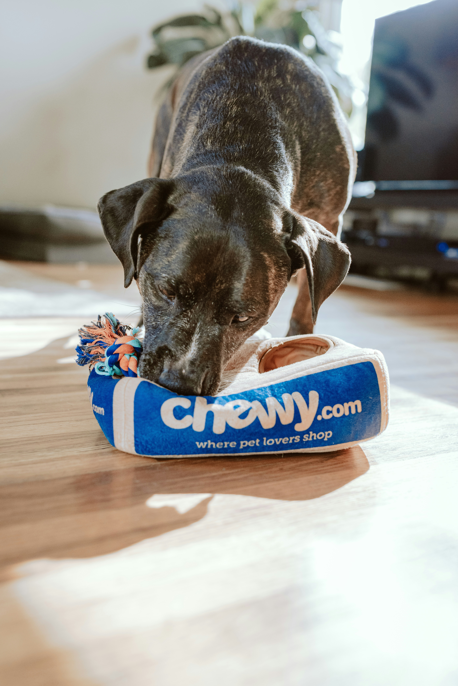
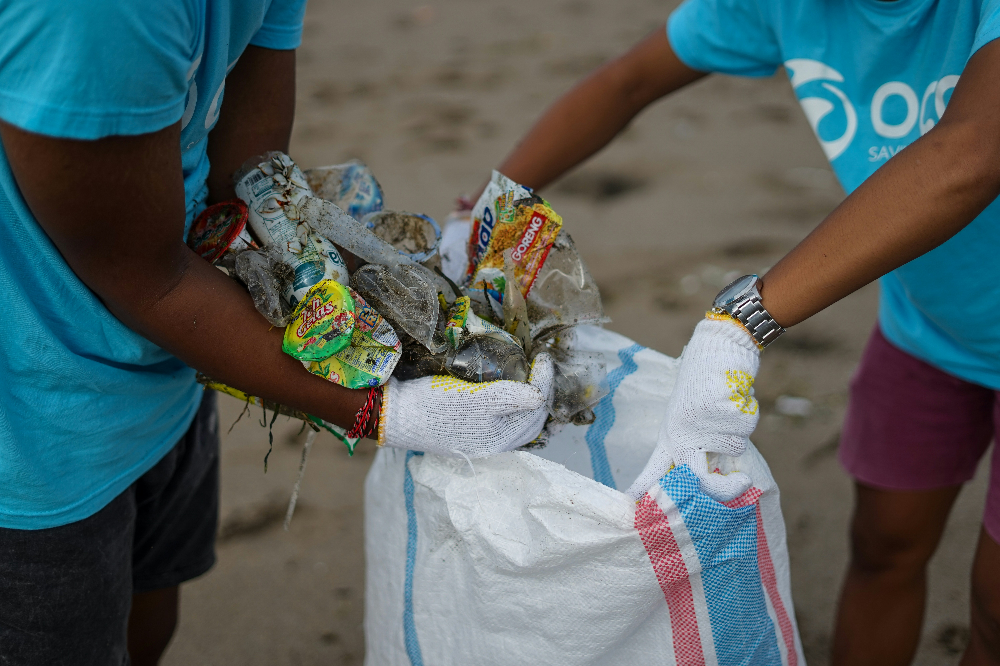

Our Projects
We run several real-time community projects focused on education, food distribution, animal care, environment protection, and skill development.

Seva
Project Seva
Food distribution drive supporting underprivileged families with nutritious meals.

Education
Project Bachpanshala
Basic education and learning support for underprivileged children.

Animal Care
Project Jeev
Rescue and care for stray and abandoned animals.

Skills
Project Udaan
Women empowerment through tailoring and skill training programs.

Environment
Project Prakriti
Tree plantation and environmental awareness campaigns.

Development
Project Vikas
Skill development training for students and youth.